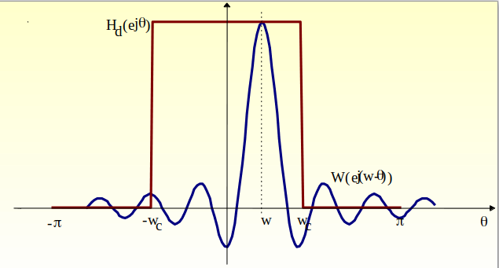
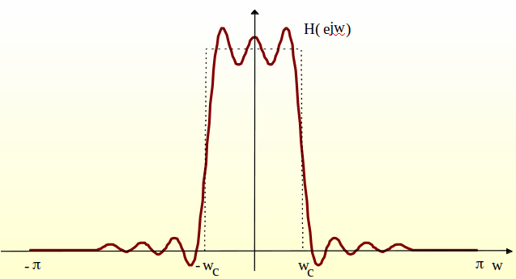
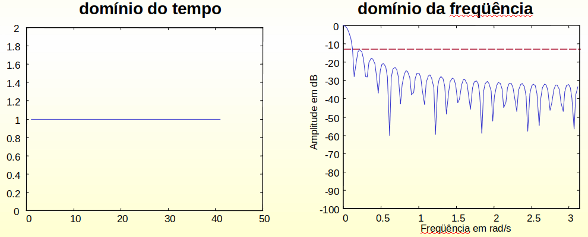
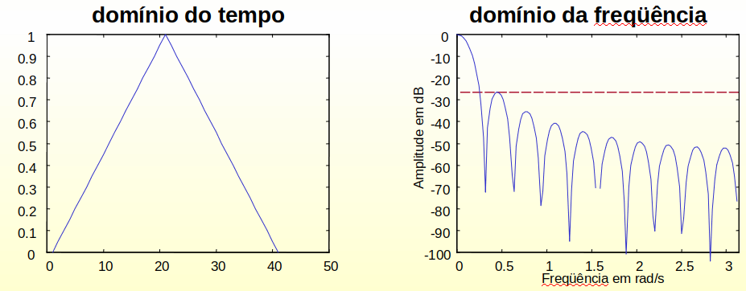
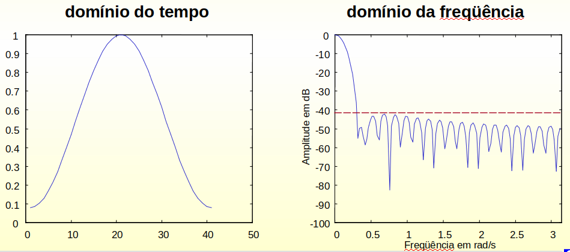
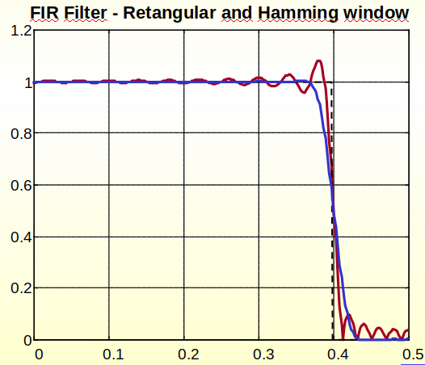
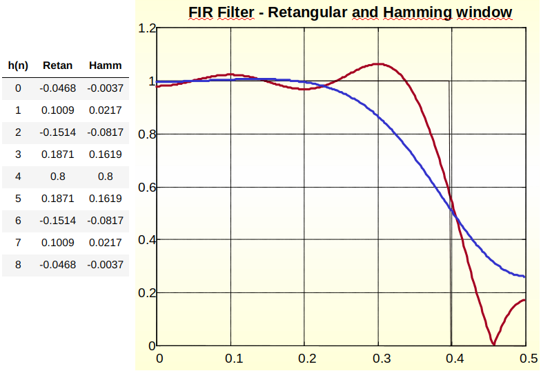
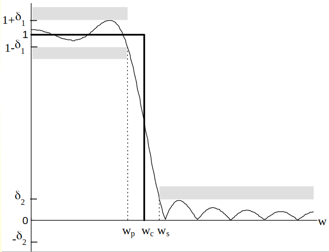
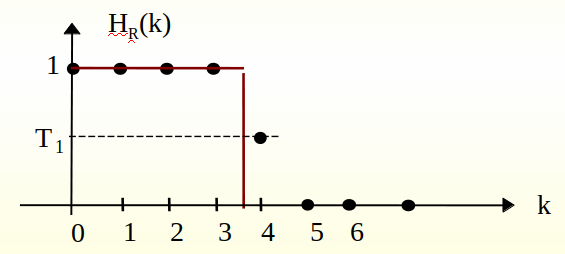

Aula 10 - Filtros FIR - Parte 2#
Versão 2023
Essas notas de aula podem ser compartilhadas nos termos da lincença Creative Commons CC BY-NC-ND 4.0, com propósitos exclusivamente educacionais.
Attribution-NonCommercial-NoDerivatives 4.0 International
Função de transferência do filtro#
\( y[n] = x[n]*h[n] \to H(z) = \frac{Y(z)}{X(z)} = H(z) = \sum_{k=0}^{M-1}h[k]z^{-k} \)
Condição de Fase Linear#
Um filtro FIR apresenta fase linear se a seguinte condição for satisfeita:#
\( h[n] = h[M-1-n] \)#
\( h[n] = h[M-n] \)#
\( h[n] = -h[M-1-n] \)#
\( h[n] = -h[M-n] \)#
um filtro FIR apresenta fase linear quando a resposta ao impulso \(h[n]\) é simétrica em torno do ponto \((M-1)/2\).#
Este filtro é conhecido como filtro FIR tipo I ou II, dependendo de \(M\) ser ímpar ou par.#
Existem outras condições de simetria para o filtro FIR com fase linear que serão apresentadas adiante.#
Para mostrar esta condição vamos admitir \(M\) um número par. Assim, a função de transferência do filtro será:
\( H(z) = z^{-\left( \frac{M-1}{2} \right)} \sum_{k=0}^{\frac{M}{2}-1}h_k \left[ z^{\left( \frac{M-1}{2}-k \right)}+ z^{-\left( \frac{M-1}{2}-k \right)} \right] \)#
Substituindo \(z\) por \(e^{jw}\), tem-se:
\( H(e^{jw}) = e^{-jw\left( \frac{M-1}{2} \right)} \sum_{k=0}^{\frac{M}{2}-1}h_k \left[ e^{jw\left( \frac{M-1}{2}-k \right)} + e^{-jw\left( \frac{M-1}{2}-k \right)} \right] \)#
\( H(e^{jw}) = e^{-jw\left( \frac{M-1}{2} \right)} \sum_{k=0}^{\frac{M}{2}-1}2h_k\cos\left( w\left( \frac{M-1}{2}-k \right)\right) \)#
A equação acima apresenta um termo real \([H_r(w)]\) e uma fase linear \(\Theta(w)\).
\( \text{módulo: }\quad H_r(e^{jw}) = \sum_{k=0}^{\frac{M}{2}-1}2h_k\cos\left(w\left( \frac{M-1}{2}-k \right) \right) \)
\( \text{fase linear: }\quad \Theta(e^{jw}) = \begin{cases} -w\frac{M-1}{2}, &H_r\geq0 \\ -w\frac{M-1}{2}+\pi, &H_r<0 \end{cases} \)
1a. Parte#
Projeto de Filtros FIR por janelas#
Filtros FIR por Janelas#
É baseado na aproximação da resposta em frequência desejada, com a condição de fase linear.
O projeto inicia-se com a especificação da resposta desejada.
Em seguida a determinação da resposta ao impulso.
Truncamento de \(h[n]\) por janelas:
\( h_d[n] = \frac{1}{2\pi}\int_{-\pi}^{\pi}H_d(e^{jw})e^{jwn}dw \)
A característica de freqüência desejada é aquela dos filtros ideais.
\(h_d[n]\) deve ser causal.
\(h_d[n]\) tem duração infinita.
Logo ela deve ser truncada no ponto \(n = M-1\).
\( h[n] = \begin{cases} h_d[n] &:n=0,1,\dots,M-1 \\ 0 &:c.c. \end{cases} \)
Se o truncamento for direto, a operação é equivalente a multiplicar \(h_d[n]\) por uma janela retangular do tipo:
\( w[n] = \begin{cases} 1, &n=0,1,\dots,M-1 \\ 0, &c.c. \end{cases} \)
E a resposta à amostra unitária do filtro será dada por:
\( h[n]=h_d[n]w[n] = \begin{cases} h_d[n], &n=0,1,2,\dots,M-1 \\ 0, &c.c. \end{cases} \)
As consequências desta multiplicação (ou truncamento) são melhor compreendidas analisando \(h[n]\) no domínio da frequência.
\( H(e^{jw}) = H_d(e^{jw})\ast W(e^{jw}) = \frac{1}{2\pi} \int_{-\pi}^{\pi}H_d(e^{j\theta})W(e^{j(w-\theta)})d\theta \)
A operação de convolução produz uma resposta em frequência que é uma versão “manchada” da resposta em frequência desejada.
Para a janela retangular a resposta em frequência é dada por:
\( W(e^{jw}) = e^{-jw\frac{M-1}{2}}\frac{\sin(wM/2)}{\sin(w/2)} \)
A figura seguinte mostra o efeito da convolução entre \(H(e^{jw})\) e \(W(e^{jw})\) para um filtro passa-baixas ideal.
Os lóbulos laterais da janela retangular provocam o efeito de oscilação na resposta em frequência do filtro.
A janela poderia ser escolhida para ter banda estreita.
Outras janela com transição mais suave.
 
Algumas Janelas para o Projeto de Filtros FIR#
Janela Retangular#
\( w[n] = \begin{cases} 1, &n=0,1,2,\dots,M-1 \\ 0, &c.c. \end{cases} \)

Janela de Bartlett#
\( w[n] = \begin{cases} \frac{2n}{(M-1)}, &0\leq n \leq (M-1)/2 \\ 2\left( \frac{1-n}{(M-1)} \right), &(M-1)/2<n\leq M-1 ) \\ 0, &c.c. \end{cases} \)

Janela de Hamming#
\( w[n] = \begin{cases} 0.54-0.46\cos\left( \frac{2\pi n}{M-1} \right), &0\leq n \leq M-1 \\ 0, &c.c. \end{cases} \)

Exemplo de Projeto#
Projeto de um filtro FIR passa-baixas com frequência de corte \(w_c\), fase linear e ordem \(M-1\).
A resposta em frequência do filtro ideal é dada por: \( H_d(e^{jw}) = \begin{cases} e^{-jw\frac{M-1}{2}}, &|w|<w_c \\ 0, &w_c<|w|<\pi \end{cases} \)
Cálculo da resposta ao impulso:
\( h_d[n] = \frac{1}{2\pi}\int_{-w_c}^{w_c}e^{-jw\frac{M-1}{2}}e^{jwn}dw = \frac{1}{2\pi}\int_{-w_c}^{w_c}e^{jw\left(n-\frac{M-1}{2}\right)}dw = \frac{\sin\left[ w_c\left( n-\frac{M-1}{2} \right) \right]}{\pi\left( n-\frac{M-1}{2} \right)} \)
Observe que \(h_d[n] = h_d[M-1-n]\) \(\Rightarrow\) Fase Linear
Multiplicando \(h_d[n]\) por uma das janelas anteriores tem-se: \( h[n] = \frac{\sin\left[ w_c \left( n-\frac{M-1}{2} \right) \right]}{\pi\left( n-\frac{M-1}{2} \right)}w[n] \)
Exemplo: \(f_c=0.4\) (\(w_c=0.8\pi\)); \(M=51\); Janela Retangular e de Hamming

Admitindo M=9

Tabela para o projeto de janelas#
Janela |
Amplitude do lóbulo lateral (dB) |
Largura da transição (\(\Delta f\)) |
|---|---|---|
retangular |
-13 |
\(0.9/(M-1)\) |
hanning |
-31 |
\(3.1/(M-1)\) |
hamming |
-41 |
\(3.3/(M-1)\) |
blackman |
-57 |
\(5.5/(M-1)\) |
Roteiro de Projeto#
Dados: a atenuação mínima na banda de atenuação e a banda de transição:
Escolhe-se a janela,
\(w[n]\)
Determina-se o tamanho \(M\) da janela.
Na tabela anterior, \(M - 1\) é a ordem do filtro
Determina-se a resposta ao impulso do filtro desejado:
\(h_d[n]\)
Resposta ao impulso do filtro FIR:
\(h[n] = h_d[n]\cdot w[n]\)
Projeto de Filtros FIR Utilizando Janela de Kaiser#
Janela Ideal: É aquela que no domínio da frequência é maximamente concentrada em torno de \(w = 0\).
A janela de Kaiser se aproxima desta condição Ideal.
Equação: \( w[n] = \begin{cases} \frac{I_0\left\{ \beta \left[ 1- \left( \frac{n-\alpha}{\alpha} \right)^2 \right]^\frac{1}{2} \right\}}{I_0(\beta)}, &0\leq n\leq M \\ 0, &c.c. \end{cases} \)
Em que: \(\alpha = M/2\) e \(I_0[ \cdot ]\) representa a função de Bessel modificada de ordem zero.
No caso de \(\beta = 0\) a janela se reduz à retangular.
Especificações de Projeto:#
\(\delta_1\) e \(\delta_2\): erros máximos nas bandas de passagem e de atenuação
Frequências das bandas de passagem (\(w_p\)) e atenuação (\(w_s\))
Admitindo: \(\delta=Min(\delta_1,\delta_2)\); \(\Delta w=w_s-w_p\); \(w_c=(w_p+w_s)/2\)

Roteiro de Projeto: Dados: \(w_p\), \(w_s\) e \(\delta\).#
Defina o erro em dB: \( A=-20\log_{10}(\delta) \text{ em que: } \delta=Min[\delta_1,\delta_2] \)
Determine a constante \(\beta\) através da seguinte expressão:
\( \beta = \begin{cases} 0.1102(A-8.7), &A>50 \\ 0.5842(A-21)^{0.4}+0.07886(A-21), &21\leq A\leq 50 \\ 0, &A<21 \end{cases} \)
A ordem \(M\) é calculada utilizando a banda de transição:
\( M = \frac{A-8}{2.285\Delta w}, \text{ em que: }\Delta w=w_s-w_p \)
Resposta ao Impulso para o filtro passa-baixas:
\( h[n] = \begin{cases} \frac{\sin(w_c(n-\alpha))}{\pi(n-\alpha)}\frac{I_0[\nu]}{I_0[\beta]}, &0\leq n\leq M \\ 0, &c.c. \end{cases} \)
\( \text{em que: } \nu=\beta\left[ 1- \left( \frac{n-\alpha}{\alpha} \right)^2 \right]^\frac{1}{2} \text{ e } \alpha=M/2 \)
Função de Bessel \(I_0(x)\)
\( I_0(x) = 1+\sum_{k=1}^{\infty}\left[ \frac{1}{k!}\left(\frac{x}{2}\right)^k \right]^2 \)
Em que: \(k=25\) é suficiente
O mesmo procedimento poderia ser feito para filtros passa altas, passa banda ou rejeita banda.
Resposta ao Impulso dos Filtros#
\( h_{lp}[n] = \frac{\sin[w_c(n-M/2)]}{\pi(n-M/2)} \)
\( h_{hp}[n] = \frac{\sin[\pi(n-M/2)]}{\pi(n-M/2)}-\frac{\sin[w_c(n-M/2)]}{\pi(n-M/2)} \)
\( h_{bp}[n] = \frac{1}{\pi(n-M/2)}\{ \sin[w_{c2}(n-M/2)]-\sin[w_{c1}(n-M/2)] \} \)
\( \text{onde: } w_{c2}>w_{c1} \)$
\( h_{sp}[n] = \frac{1}{\pi(n-M/2)}\{ \sin[w_{c1}(n-M/2)]-\sin[w_{c2}(n-M/2)] \} \)
2a. Parte#
Projeto de Filtros FIR por Amostragem em Frequência#
Restrição: Fase linear#
Um filtro FIR com fase linear e ordem \(M-1\) apresenta a seguinte condição de simetria: \( h[n]=h[M-1-n] \)
Admitindo \(M = 5\) \(\Rightarrow\) \(h[0] = h[4]\); \(h[1] = h[3]\) e \(h[2]\) (ponto de simetria).
\( \begin{split} H(e^{jw})&=h[0]+h[1]e^{-jw}+h[2]e^{-j2w}+h[3]e^{-j3w}+h[4]e^{-j4w} \\ &= e^{-j2w}[h[0](e^{j2w}+e^{-j2w})+h[2]+h[1](e^{jw}+e^{-jw})] \\ &= e^{-j2w}[h[2]+2h[1]\cos(w)+2h[0]\cos(2w)] \end{split} \)
A equação acima é composta de duas partes: (uma parte real e outra imaginária).
\( \text{Termo Real: } \begin{cases} H_r(e^{jw}) = [h[2]+2h[1]\cos(w)+2h[0]\cos(2w)] \\ |H(e^{jw})| = |H_r(e^{jw})| \end{cases} \)
\( \text{Termo de Fase: } \Theta(e^{jw}) = \begin{cases} -2w, &H_r(e^{jw})\geq0 \\ -2w+\pi, &H_r(e^{jw})<0 \end{cases} \)
Admitindo \(M = 4\) \(\Rightarrow\) \(h[0] = h[3]\); \(h[1] = h[2]\), tem-se: \( H(e^{jw}) = e^{-j\frac{3}{2}w} \left[ 2h[0]\cos\left(\frac{3w}{2}\right) + 2h[1]\cos\left(\frac{w}{2}\right) \right] \)
Novamente, o termo entre colchetes é real e define o módulo de \(H(e^{jw})\).
a característica de fase será dada por:
\( \Theta(e^{jw}) = \begin{cases} -\frac{3}{2}w, & H_r(e^{jw})\geq0 \\ -\frac{3}{2}w+\pi, & H_r(e^{jw})<0 \end{cases} \)
Observe que nas relações anteriores o cálculo da resposta em frequência é reduzido pela metade.
A generalização para uma ordem \(M – 1\) será vista a seguir.
Este método de projeto é desenvolvido a partir da especificação da resposta em frequência desejada.
Generalizando os dois exemplos anteriores tem-se:
\( H(e^{jw}) = H_r(e^{jw})e^{-jw\frac{M-1}{2}} \)
\( H_r(e^{jw}) = \begin{cases} h\left(\frac{M-1}{2}\right)+2\sum_{n=0}^{\frac{M-1}{2}-1}h[n]\cos\left(\frac{M-1}{2}-n\right)w, & M \text{ ímpar} \\ 2\sum_{n=0}^{\frac{M}{2}-1}h[n]\cos\left(\frac{M-1}{2}-n\right)w, & M \text{ par} \end{cases} \)
\( \Theta(e^{jw}) = \begin{cases} -\frac{M-1}{2}w, &H_r(e^{jw})\geq0 \\ -\frac{M-1}{2}w+\pi, &H_r(e^{jw})<0 \end{cases} \)
As relações anteriores são utilizadas para se projetar filtros pelo método de amostragem em frequência.
Este método é realizado a partir da especificação da resposta em frequência desejada \(H(e^{jw})\) em frequências discretas tais que: \( w_k=\frac{2\pi}{M}(k+\alpha) \; \begin{cases} k=0,1,\dots,\frac{M-1}{2} & \text{M ímpar}\\ k=0,1,\dots,\frac{M}{2}-1 & \text{M par} \end{cases} \)
em que \(\alpha\) é igual a \(0\) ou \(1/2\). Utilizaremos \(\alpha = 0\).
Nas frequências especificadas por \(w_k\) tem-se: \( H(k) = H(w_k) = H\left(\frac{2\pi}{M}k\right) = \sum_{n=0}^{M-1}h[n]e^{-j\frac{2\pi}{M}kn} \)
Como \(\alpha = 0\) o cálculo de \(h[n]\) se resume a calcular a TDF inversa de \(H(k)\). Assim,
\( h[n] = \frac{1}{M}\sum_{k=0}^{M}H(k)e^{-j\frac{2\pi}{M}nk} \)
A equação acima pode ser simplificada lembrando que \(h[n]\) é real e portanto \(H(k)\) apresenta módulo par e fase ímpar, ou seja
\( H(k)=H^\ast(M-1-k) \)
Esta propriedade permite calcular \(h[n]\) utilizando \((M+1)/2\) especificações em frequências (\(M\) ímpar) ou \(M/2\) (\(M\) par).
Considere a equação abaixo:
\( H(e^{jw}) = H_r(e^{jw})e^{-jw\frac{M-1}{2}} \)
Admitindo \(w = w_k\) tem-se:
\( \begin{split} H(k) &= H_r(k)e^{-j\frac{2\pi}{M}k\frac{M-1}{2}} = H_r(k)e^{-j\pi k}e^{j\frac{\pi}{M}k} \\ (-1)^kH_r(k)e^{j\frac{\pi}{M}k} \end{split} \)
\( \text{Admitindo: } G(k) = (-1)^kH_r(k) \; \Rightarrow \; H(k)=G_r(k)e^{j\frac{\pi}{M}k} \)
Explorando a equação acima e as propriedades de simetria de \(h[n]\) e \(H(k)\) chega-se que:
\( \begin{cases} h[n] = \frac{1}{M}\left\{G(0)+2\sum_{k=1}^{U}G(k)\cos\left(\frac{2\pi}{M}\right)k\left(N+\frac{1}{2}\right)\right\} \\ \text{em que: } U=\frac{M-1}{2}: \text{(M ímpar) ou } \frac{M}{2}-1: \text{ (M par)} \end{cases} \)
Exemplo: Determine os coeficientes de um filtro FIR com fase linear tal que: \(M=15\), \(T_1 = 0.4\) e \(H_r(k)\) é dada abaixo:#
\( H_r(k) = \begin{cases} 1, &k=0,1,2,3 \\ T_1, &k=4 \\ 0, &k=5,6,7 \end{cases} \begin{split}&\text{ Em que: o termo T1 = 0.4 }\\&\text{ representa a banda de transição.}\end{split} \)

\( \text{Solução: } h[n]=\frac{1}{15}\left\{ G(0)+2\sum_{k=1}^{7}G(k)\cos\left(\frac{2\pi}{15}\right)k\left(n+\frac{1}{2}\right) \right\} \)